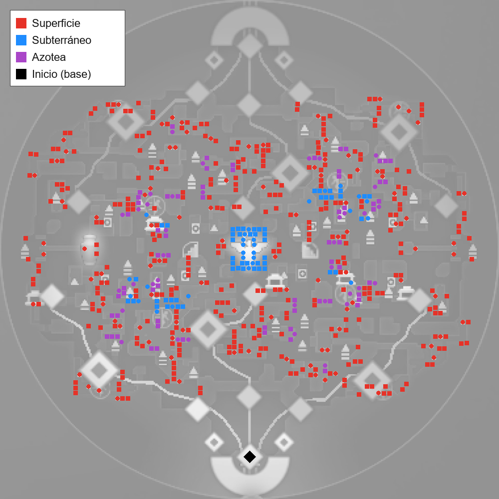

I. Introducción
En los videojuegos de arena de batalla en línea (MOBA) y disparadores como Deadlock, la economía del juego juega un rol determinante en la victoria. Las “almas” constituyen la divisa principal para adquirir ítems de mejora, habilidades pasivas y equipamiento estadístico.
Una fuente estratégica de almas la constituyen las cajas neutrales repartidas de forma discreta a lo largo del mapa. Los jugadores suelen abandonar periódicamente sus líneas de combate para ejecutar recorridos de recolección. Sin embargo, el tiempo dedicado a esta tarea implica un costo de oportunidad directo: el jugador no participa en enfrentamientos, defensa de torres ni control de objetivos principales.
Por consiguiente, la generación empírica de rutas —basada en la intuición del jugador— produce trayectorias subóptimas que arriesgan el tiempo de juego o pierden densidad de recolección. Este problema requiere un enfoque algorítmico automatizado capaz de resolver la disyuntiva entre maximización de recompensa y minimización de tiempo.
Este documento describe la formulación del problema, el algoritmo secuencial, su implementación sobre una instancia real del mapa y los resultados experimentales que servirán como línea base para las versiones paralelas.
II. Marco Teórico
A. El Problema de Optimización
El problema de recolección en Deadlock se clasifica formalmente como una variante del Orienteering Problem (OP) o Team Orienteering Problem (TOP) para un solo agente, combinado con restricciones de presupuesto temporal (Traveling Salesperson Problem with Profits - TSPP) [2], [5].
Sea un grafo completo G = (V, E) donde el conjunto de vértices V = {0, 1, …, n} representa las posiciones de las cajas en el mapa, siendo el vértice 0 el punto inicial (y de retorno) del jugador. Cada nodo i ∈ V \ {0} tiene asignada una recompensa Si > 0 equivalente a la cantidad de almas obtenibles. Cada arista (i, j) ∈ E tiene un costo de desplazamiento asociado cij > 0, que modela el tiempo de tránsito euclidiano o real.
El objetivo consiste en determinar una secuencia de visita o ruta R = (v0, v1, …, vk, v0) tal que se maximice la ganancia acumulada de almas sujeto a no rebasar un tiempo máximo prefijado tmax:
B. Slime Mould Algorithm (SMA)
El algoritmo Slime Mould Algorithm (Li et al., 2020) [1] es una metaheurística bioinspirada basada en el comportamiento de forrajeo y oscilación celular del moho de fango Physarum polycephalum. El moho forma una red de tubos protoplasmáticos óptimos entre fuentes de alimento aprovechando el flujo citoplásmico retroalimentado por gradientes de concentración.
En la formulación matemática continua de SMA, las posiciones de los moho-agentes se actualizan mediante la variación de pesos numéricos W que simulan la contracción citoplásmica según la calidad del alimento (fitness) obtenido:
donde bF es el mejor fitness alcanzado en la iteración actual, wF el peor fitness, S(i) el fitness de la solución i, y r un valor aleatorio en el intervalo [0, 1]. El signo positivo se aplica a la mitad de la población con mejor fitness y el negativo a la mitad restante. La posición de cada agente se actualiza como:
X* = vc · X, en otro caso(4)
donde Xb es la mejor posición encontrada, XA y XB son dos agentes elegidos al azar, vb ∈ [−a, a] y vc ∈ [−b, b] son vectores aleatorios uniformes, y
con t la iteración actual, T el número máximo de iteraciones y DF el mejor fitness global. Adicionalmente, con probabilidad z un agente se reinicia en una posición aleatoria del espacio de búsqueda, lo que preserva la exploración.
III. Desarrollo del Algoritmo Secuencial
A. Mapeo Discreto del Problema
Debido a que SMA fue concebido originalmente para espacios de búsqueda continuos ℝd, para el mapa de Deadlock se ha diseñado un mecanismo de mapeo discreto mediante vectores de prioridad continua convertidos a permutaciones válidas de cajas mediante la regla del Criterio de Selección Codificada (RK-SMA), basada en la representación de llaves aleatorias [4].
Cada agente mantiene un vector continuo Xi ∈ [0, 1]n. Para evaluar una solución, las dimensiones se ordenan de mayor a menor valor continuo, definiendo el orden explícito de visita a las cajas. Se agregan nodos a la ruta en ese orden estricto hasta que la adición de la siguiente caja viole la restricción de tiempo tmax. En la Sección IV se presentan variantes de esta decodificación.
B. Estructura y Pseudocódigo Secuencial
El algoritmo secuencial opera iterativamente evaluando el fitness (almas totales), recalculando los pesos protoplasmáticos y actualizando las posiciones continuas mediante operaciones de exploración y explotación.
Algoritmo 1: SMA Secuencial para Cajas Deadlock
Entrada: V, S, C, t_max, N_pop, Max_Iter
Salida: Mejor Ruta R_opt, Max Almas Z_max
1: Inicializar X_i (i = 1..N_pop) en [0,1]^n
2: mientras iter < Max_Iter hacer
3: para cada agente i hacer
4: R_i ← Decodificar_Ruta(X_i, C, t_max)
5: Fitness[i] ← Calcular_Almas(R_i, S)
6: fin para
7: Ordenar población (bF: mejor, wF: peor)
8: Calcular pesos W_i según Ec. (3)
9: para cada agente i hacer
10: Actualizar X_i con Ec. (4) y (5)
11: fin para
12: iter ← iter + 1
13: fin mientras
14: retornar R_opt, Z_max
C. Benchmark de Validación
Antes de la fase de despliegue sobre el mapa final del juego, se tiene contemplado evaluar el algoritmo secuencial con las instancias estandarizadas del Team Orienteering Problem de KU Leuven [3] (conjuntos Tsiligirides y Chao) adaptadas a una única ruta. La Tabla I resume la equivalencia entre ambos entornos. Los resultados de este documento corresponden a la instancia del mapa de Deadlock; la validación con dichas instancias queda como actividad pendiente.
Equivalencia de Parámetros de Benchmark
| Parámetro TOP | Entorno Deadlock | Rol en SMA |
|---|---|---|
| Vértices (n) | Ubicación de cajas | Dimensión del vector X |
| Puntuación (Si) | Almas por caja | Función objetivo |
| Tmax | Tiempo máximo de ruta | Filtro de factibilidad |
| Origen/Destino | Línea o base del jugador | Punto fijo V0 |
| Distancia Dij | Costo de movimiento | Matriz C |
IV. Implementación
El sistema se implementó en Python 3.12 con NumPy. El código fuente y una herramienta de visualización están disponibles públicamente [7]. La implementación se organiza en tres módulos: extracción de la instancia, optimización y visualización.
A. Construcción de la Instancia
Las posiciones de los contenedores se obtuvieron de un mapa del juego anotado por el usuario u/Awsmminer de la plataforma Reddit [6]. En dicho mapa cada contenedor se indica con un marcador cuadrado de color puro que codifica su tipo (caja o urna) y su nivel (superficie, subterráneo o azotea).
El módulo extraer_nodos.py procesa la imagen de 2000 × 2000 píxeles en cuatro pasos: (i) clasificación de cada
píxel por distancia euclidiana en el espacio RGB a seis colores de referencia, con una tolerancia de 60 unidades (35 para el
amarillo, que se confunde con un ícono del mapa); (ii) agrupamiento de los píxeles en componentes 4-conexas; (iii) descarte de
componentes cuya área está fuera del rango esperado o cuya forma no es rectangular, y (iv) separación de marcadores adyacentes
mediante una rejilla definida por el lado típico del marcador (13 px). Las coordenadas resultantes se normalizan al intervalo
[0, 1]. La detección se verificó visualmente superponiendo los centroides sobre la imagen original. La Tabla II resume los
{{n_nodos}} nodos obtenidos y la Fig. 1 muestra su distribución.
Contenedores Extraídos por Tipo y Nivel
| Nivel | Cajas | Urnas | Total |
|---|

B. Modelo de Tiempos
El costo de la arista (i, j) incluye el desplazamiento, el cambio de nivel y el tiempo necesario para romper el contenedor de destino:
donde pi son las coordenadas normalizadas, L el ancho del mapa, τ un factor de tortuosidad que compensa la presencia de muros, v la velocidad de desplazamiento, ℓi ∈ {0, 1, 2} el nivel (subterráneo, superficie, azotea), δ la penalización por nivel y βj el tiempo de ruptura. La Tabla III lista los valores empleados. Estos parámetros son estimaciones y no mediciones realizadas dentro del juego; por ello, los resultados deben interpretarse de manera comparativa entre métodos evaluados bajo el mismo modelo. Los nodos para los cuales c0j + cj0 > tmax se excluyen antes de la búsqueda, ya que no pueden formar parte de ninguna ruta factible.
Parámetros del Modelo
| Parámetro | Valor |
|---|---|
| Ancho del mapa L | {{L}} m |
| Velocidad v | {{v}} m/s |
| Tortuosidad τ | {{tau}} |
| Penalización por nivel δ | {{delta}} s |
| Tiempo de ruptura β (caja / urna) | {{beta_c}} s / {{beta_u}} s |
| Almas S (caja / urna) | {{s_c}} / {{s_u}} |
| Punto de inicio y retorno | Base del equipo |
C. Decodificadores
Se implementaron cuatro decodificaciones del vector X a una ruta factible. Todas garantizan el cumplimiento de la restricción (2), por lo que no se requiere penalización en la función objetivo.
- Estricto. La regla descrita en la Sección III-A: las cajas se agregan al final de la ruta en orden de llave y el proceso se detiene con la primera que no cabe.
- Salto. Igual que el anterior, pero las cajas que no caben se omiten y se continúa con las siguientes.
- Inserción. Las cajas se consideran en orden de llave; cada una se inserta entre los nodos consecutivos (a, b) que minimizan Δ = caj + cjb − cab, siempre que la ruta resultante sea factible.
- Guiado. Construcción voraz en la que, en cada paso, se inserta la caja j que maximiza el valor
donde Δj es el menor costo de inserción factible de j y γ = 4 limita el factor de sesgo al intervalo [e−2, e2]. Con xj = 0,5 para todo j se reproduce exactamente la heurística voraz; el SMA aprende qué cajas conviene favorecer o postergar para corregir las decisiones miopes de dicha heurística. Esta variante constituye una hibridación integrativa entre la metaheurística y una heurística constructiva. Su costo por evaluación es O(k2n), con k el número de cajas de la ruta, frente a O(n log n) del decodificador estricto.
D. Adaptación del SMA
Dado que el problema es de maximización y las almas no están acotadas en [0, 1], se realizaron los siguientes ajustes: (i) la población se ordena de mayor a menor fitness, de modo que el cociente de la Ec. (3) vale 0 para el mejor agente y 1 para el peor; (ii) la probabilidad de la Ec. (5) se normaliza como p = tanh(|S(i) − DF| / |DF|), pues sin normalización tomaría el valor 1 para casi todos los agentes; (iii) se emplea a = arctanh(1 − (t + 1) / (T + 1)) para evitar el valor infinito en la primera iteración; (iv) tras cada actualización las posiciones se recortan al intervalo [0, 1], y (v) Xb corresponde a la mejor posición global. Con el decodificador guiado, un agente se inicializa con xj = 0,5, de modo que la solución voraz forma parte de la población inicial.
E. Línea Base Voraz
Como referencia se implementó una heurística de inserción voraz que, mientras exista una caja factible, inserta aquella con mayor cociente Sj / Δj en su posición de menor costo. Es determinista y se ejecuta en milisegundos.
F. Evaluación Paralela de la Población
La decodificación concentra la mayor parte del costo por iteración: con el decodificador guiado cada agente requiere
O(k2n) operaciones, mientras que la actualización de posiciones es una operación vectorizada de
O(Nn). Como la decodificación de cada agente es independiente,
la función evaluar_poblacion se paraleliza directamente con un conjunto de procesos (multiprocessing.Pool):
la instancia se copia una sola vez a cada proceso al crearlo y en cada iteración solo se transmiten los vectores Xi
y las rutas resultantes. La actualización del SMA permanece secuencial. Esta versión constituye un primer paso hacia las
implementaciones en memoria compartida y GPU descritas en la Sección VIII.
G. Herramienta de Visualización
Se desarrolló un visor web que muestra la ruta sobre el mapa, la curva de convergencia y la evolución de la mejor ruta
iteración por iteración, con interfaz en español e inglés. Está disponible en
bistraw.github.io/-SoulPath-Crate-farming-routes-for-Deadlock.
V. Diseño Experimental
Los experimentos se ejecutaron en un equipo con procesador {{cpu}} ({{nucleos}}), 32 GB de RAM, Windows 10, Python
{{python}} y NumPy {{numpy}}. Se utilizó una población de N = {{N}} agentes, T = {{T}} iteraciones y
z = {{z}}. Cada configuración se repitió {{reps}} veces con semillas 0 a {{reps_m1}}; se reportan la media, la desviación
estándar muestral, el mejor y el peor valor. Salvo en el experimento de escalamiento, la población se evaluó con 4 procesos.
Se realizaron tres experimentos: (i) comparación de los cuatro decodificadores con tmax = 90 s; (ii) desempeño
del decodificador guiado frente a la heurística voraz con tmax ∈ {45, 90, 150} s, y (iii) tiempo de cómputo
con 1, 2, 4 y 8 procesos (tmax = 90 s, 30 iteraciones, tres semillas). El experimento completo se reproduce con
python experimentos.py.
VI. Resultados
A. Comparación de Decodificadores
La Tabla IV presenta los resultados con tmax = 90 s. {{texto_decodificadores}}
Comparación de Decodificadores (tmax = 90 s, {{reps}} repeticiones)
| Decodificador | Almas media ± desv. | Mejor | Peor | Cajas | Cómputo (s) |
|---|---|---|---|---|---|
| Voraz (referencia) | {{voraz90}} | — | — | {{voraz90_cajas}} | < 0,1 |
{{texto_decodificadores_2}}
B. Desempeño Según el Presupuesto de Tiempo
La Tabla V compara el decodificador guiado con la heurística voraz para distintos presupuestos. {{texto_presupuestos}}
SMA Guiado Frente a la Heurística Voraz
| tmax (s) | Voraz | SMA media ± desv. | SMA mejor | Mejora media | Cómputo (s) |
|---|
C. Convergencia
{{texto_convergencia}}

D. Rutas Obtenidas
{{texto_rutas}}

E. Tiempo de Cómputo y Paralelización
{{texto_paralelo}}
Tiempo de Cómputo Según el Número de Procesos
| Procesos | Tiempo (s) | Aceleración | Eficiencia |
|---|
VII. Discusión
Los resultados muestran que la representación por llaves aleatorias, aplicada de forma directa, resulta insuficiente para una instancia de este tamaño: con {{n_nodos}} nodos, las primeras posiciones de una permutación aleatoria corresponden a cajas dispersas por todo el mapa, y el presupuesto se agota en desplazamientos. La inserción por costo mínimo corrige el orden de visita, pero no la selección de cajas. El decodificador guiado conserva la representación continua del SMA y la combina con información del problema, lo que le permite partir de una solución competitiva y mejorarla.
Deben señalarse las siguientes limitaciones. Primero, la distancia euclidiana corregida por un factor constante no reproduce los recorridos reales, que dependen de muros, escaleras y tirolesas. Segundo, los parámetros de la Tabla III son estimaciones; la magnitud absoluta de las almas obtenidas depende de ellos, aunque la comparación entre métodos se realiza bajo el mismo modelo. Tercero, el juego asigna recompensas variables a los contenedores y estos reaparecen con el tiempo, aspectos que el modelo estático no considera. Finalmente, la validación con instancias de referencia del TOP aún no se ha realizado.
VIII. Conclusiones y Trabajo Futuro
Se implementó el SMA secuencial para el problema de recolección de cajas en Deadlock, junto con un procedimiento automático para construir la instancia a partir de un mapa anotado por la comunidad. {{texto_conclusion}}
Esta implementación establece la línea base secuencial verificada. En la siguiente etapa del proyecto servirá de punto de comparación para versiones paralelas en arquitecturas de memoria compartida (OpenMP / multihilo), donde se espera reducir la sobrecarga de comunicación observada con procesos, y para la aceleración por GPU del cálculo de costos de inserción, orientadas a la evaluación en tiempo real durante partidas activas. También se contempla calibrar el modelo de tiempos con mediciones en el juego, sustituir la distancia euclidiana por distancias sobre la malla de navegación del mapa y completar la validación con las instancias de KU Leuven.
Agradecimientos
Los autores agradecen al usuario u/Awsmminer por elaborar y compartir el mapa con la ubicación de las cajas y urnas de Deadlock, sin el cual no habría sido posible construir la instancia del problema.
Referencias
- S. Li, H. Chen, M. Wang, A. A. Heidari, and S. Mirjalili, “Slime mould algorithm: A new method for stochastic optimization,” Future Generation Computer Systems, vol. 111, pp. 300–323, 2020.
- I. Chao, B. Golden, and E. Wasil, “The team orienteering problem,” European Journal of Operational Research, vol. 88, no. 3, pp. 464–474, 1996.
- KU Leuven, “The Orienteering Problem: Test Instances,” Division of Industrial Management, 2024. [Online]. Available: https://www.mech.kuleuven.be/en/mim/op
- J. C. Bean, “Genetics and random keys for sequencing and optimization,” ORSA Journal on Computing, vol. 6, no. 2, pp. 154–160, 1994.
- P. Vansteenwegen, W. Souffriau, and D. Van Oudheusden, “The orienteering problem: A survey,” European Journal of Operational Research, vol. 209, no. 1, pp. 1–10, 2011.
- u/Awsmminer, “Mapa de cajas y urnas de Deadlock (superficie, subterráneo y azoteas),” Reddit, 2026.
- M. F. Barrón Álvarez, L. M. Benítez Marín, and L. Merino Garfias, “SoulPath: Crate-farming routes for Deadlock,” repositorio de código, 2026. [Online]. Available: https://github.com/Bistraw/-SoulPath-Crate-farming-routes-for-Deadlock